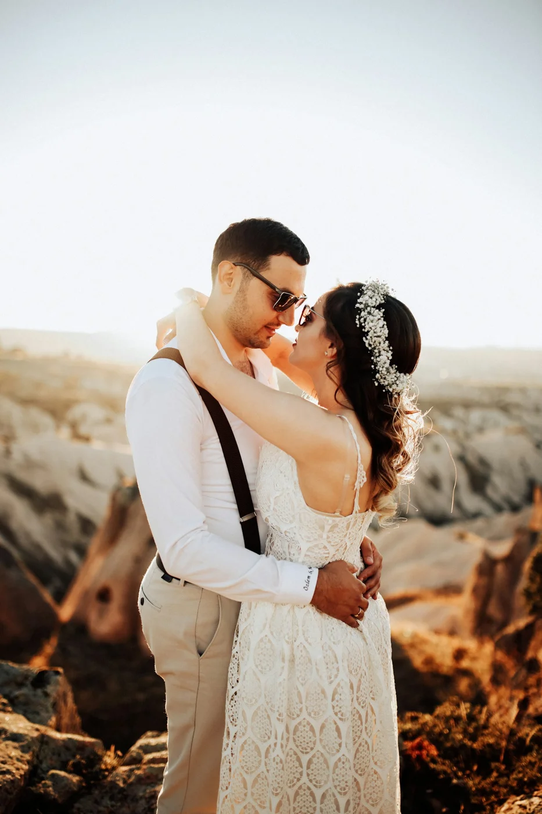
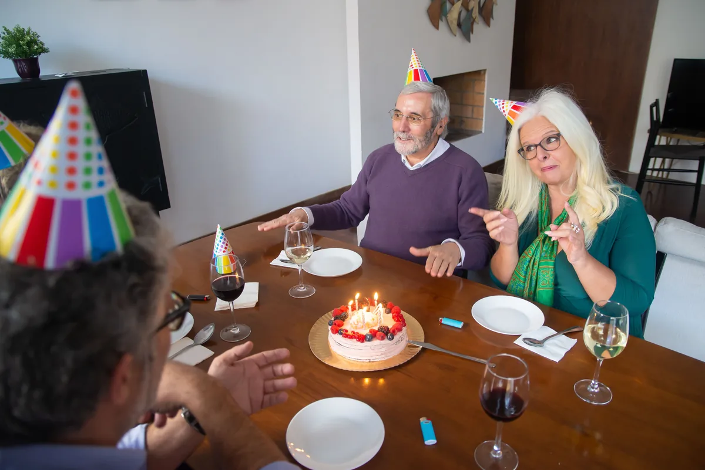
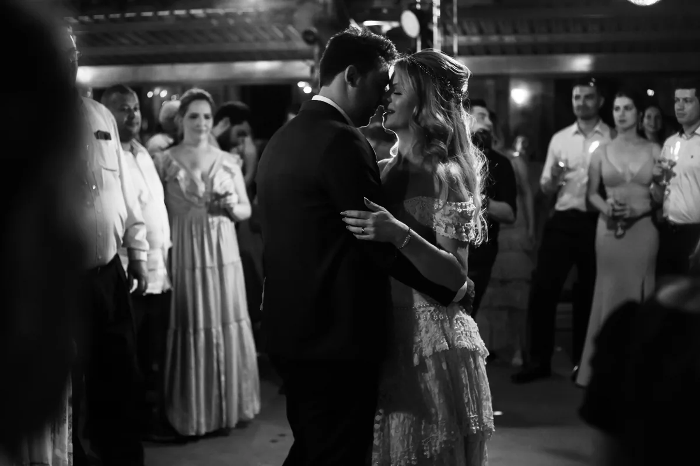
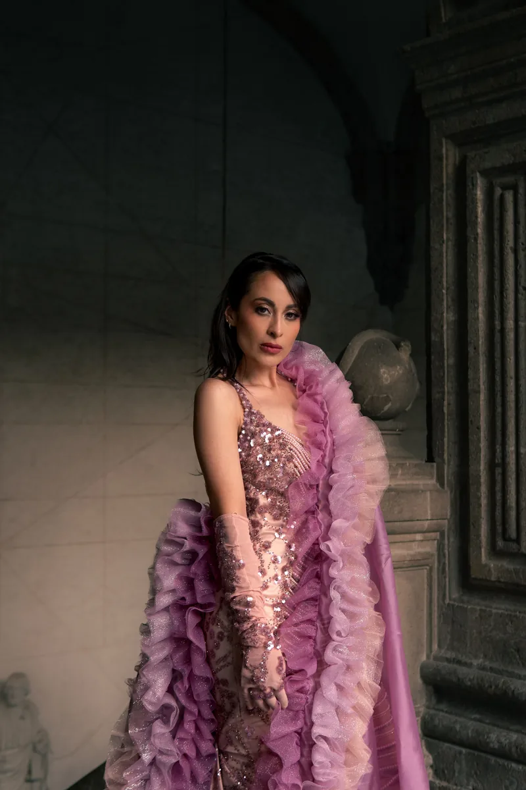
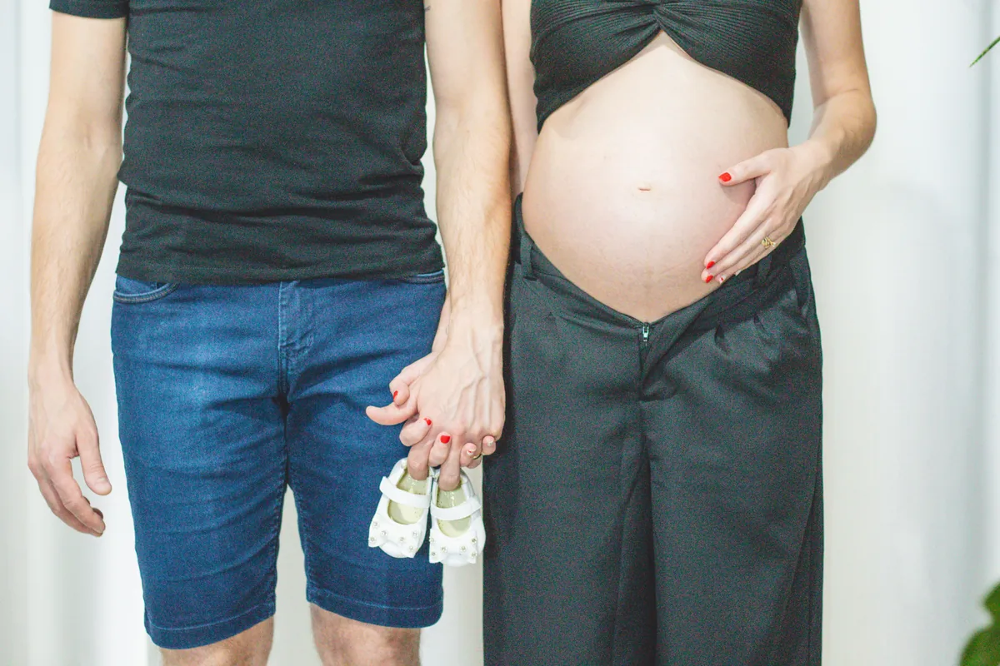
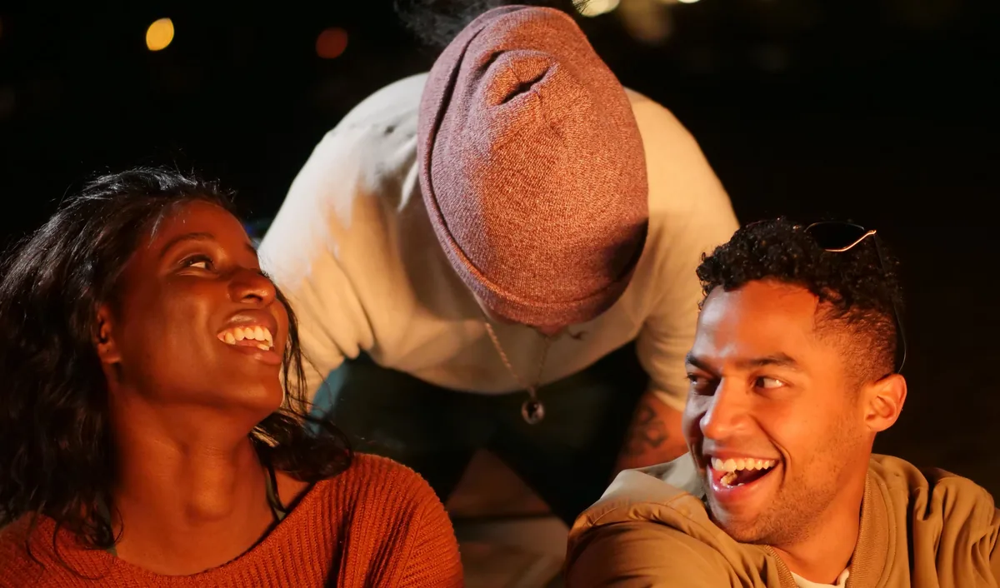
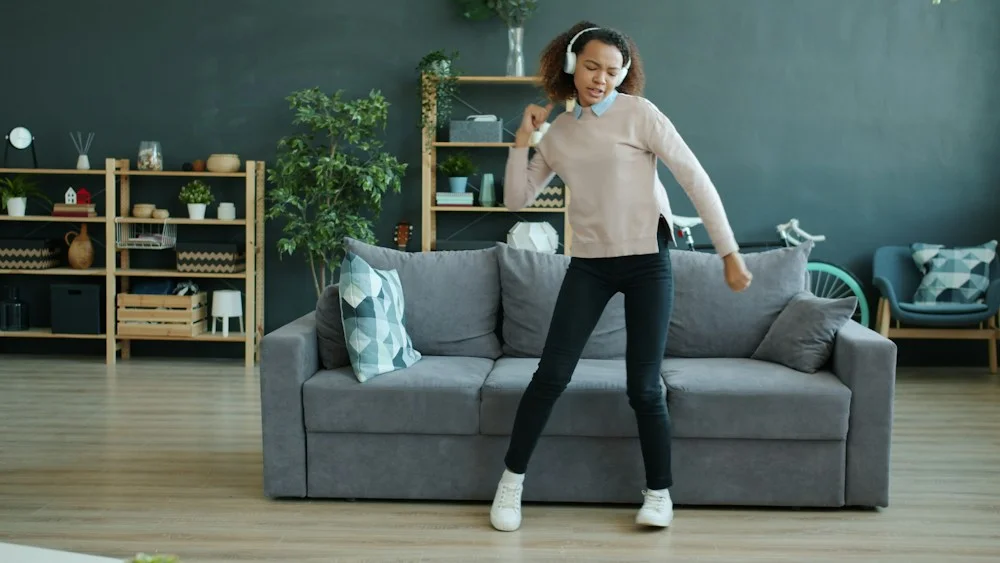

Choose the moment
An anniversary, a birthday, a tribute or something only you can tell.
PERSONALIZED SONGS
What you have shared. What you feel. What can be hard to say. Turn it into lyrics filled with your names and memories.

FROM A MEMORY TO A MELODY
You do not need to write lyrics. Just share what makes your story special.
An anniversary, a birthday, a tribute or something only you can tell.
Answer questions tailored to your occasion: memories, names, phrases and the music you love.
Two personalized songs with lyrics. With the slideshow package, your photos accompany one of them.
FOR ALL OF LIFE’S MOMENTS
Choose an occasion and we will guide you with the right questions. Save a draft and take your time.

BirthdayCelebrate someone and their story.
WeddingA song for the beginning of your life together.
QuinceañeraCelebrate this new chapter with a song for your dance, entrance or video.For Mom or DadA tribute for Mother’s Day, Father’s Day or just because.
Baby, baptism or baby showerWelcome a baby into your family.GraduationCelebrate an achievement and what comes next.Proposal or declaration of loveAsk them to marry you or share how you feel.
FriendshipCelebrate the people beside you.Business jingle or songGive your business, brand or event its own song.Another occasionA story of your own? Tell us and we will write it.WHAT MATTERS DESERVES TO LAST
The names.
The little things.
Everything that connects you.

CHOOSE HOW TO KEEP YOUR STORY
A song can be heard.
A memory can be seen, too.
YOUR STORY, SET TO MUSIC
MUSIC + YOUR MEMORIES IN PICTURES
Share your photos in the questionnaire. Online payment will be available when checkout is enabled.
BEFORE YOU BEGIN
Names, memories, phrases and feelings you would like to hear. Each occasion has its own questionnaire. Optional questions may be left blank.
The $50 USD package includes two songs and their lyrics. One song accompanies a video slideshow of your photos. You can arrange the photos and describe each moment.
Choose Spanish, English or bilingual when telling your story.
Yes. Choose Save on this device. Your text stays in this browser until you submit or delete the draft. For privacy, photos and videos are not saved in drafts.
YOUR NEXT MEMORY STARTS HERE
Complete the questionnaire step by step. Your answers and files will be sent privately to Shia Songs.